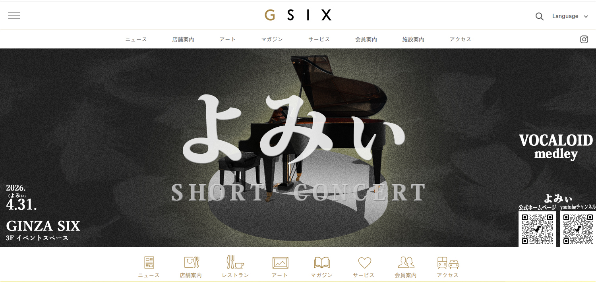
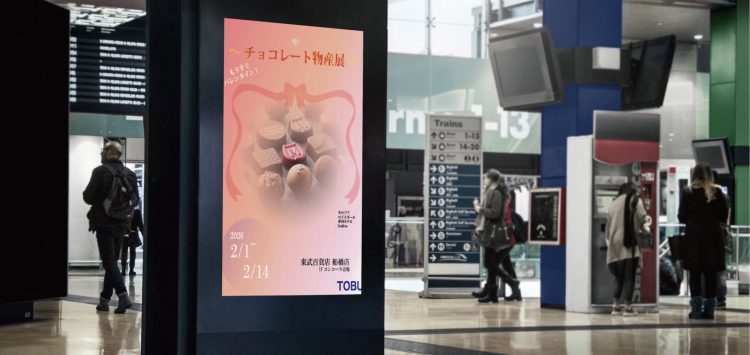

Concept
想いや背景など、言語化の難しいイメージを丁寧に汲み取り、
言葉にして整理し、デザインへと落とし込みます。
想いを汲み取り、その本質を引き出します。



想いや背景など、言語化の難しいイメージを丁寧に汲み取り、
言葉にして整理し、デザインへと落とし込みます。
余白とバランスを大切にした「静かなレイアウト」。
品のある整った美しさを追求しています。
ヒアリングを重視し、クライアント自身の中にある魅力や想いを丁寧に引き出します。
対話の中から本質を見つけ、デザインとして形にしていきます。